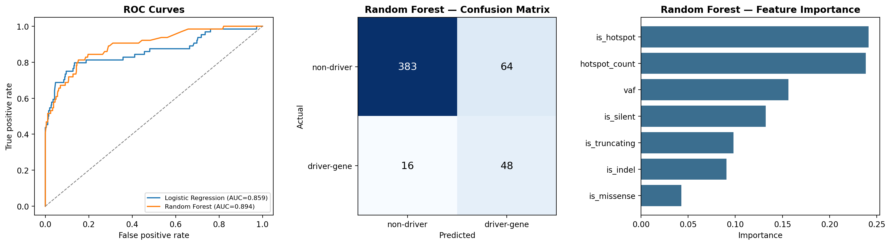

Driver Mutation Classifier
Not every mutation in a tumor matters — most are "passengers" that came along for the ride, while a small number are "drivers" that actually contribute to the cancer. This project trains a classifier to distinguish the two, using only properties of the mutation itself — not which gene it's in.
Avoiding a lookup table disguised as a model
The obvious shortcut — "is this mutation's gene on a list of known driver genes?" — isn't machine learning, it's a dictionary lookup. For this to be a genuine classifier, gene identity can't appear as an input feature. Instead, the label (driver-gene mutation vs. not) comes from checking gene membership against a curated 25-gene AML driver panel from Papaemmanuil et al. 2016 (NEJM), but the features the model actually sees are generic, gene-agnostic properties of the mutation:
- VAF (variant allele frequency) — driver mutations tend to be more clonal
- Hotspot recurrence — how many other mutations in the cohort hit the exact same amino acid position
- Variant classification — missense, truncating (nonsense/frameshift/splice), silent
- Variant type — SNP vs. indel
The idea: if the model can predict "driver-gene mutation" reasonably well from only these generic properties, that's evidence the properties themselves carry real biological signal — which is exactly the logic real driver-detection tools (e.g. MutSigCV, OncodriveCLUST) are built on.
Class imbalance
Of 2,041 mutations with complete data, only 255 (12.5%) fall in a driver gene —
a realistic imbalance, since most mutations genuinely are passengers. Both models were
trained with class_weight="balanced" so the classifier doesn't just learn
to always predict "non-driver" and get 87% accuracy for free.
Results

Random Forest reached ROC-AUC 0.894 (Logistic Regression: 0.859) on a held-out test set. More interesting than the headline number: hotspot recurrence dominates feature importance, well ahead of VAF or mutation type. That matches real cancer genomics practice directly — recurrence at the same protein position across many independent patients is one of the strongest statistical signals of positive selection (a mutation being repeatedly "chosen" because it benefits the tumor), and it's the core idea behind several real driver-detection algorithms.
The confusion matrix shows the realistic trade-off of an imbalanced problem: 48 of 64 true driver-gene mutations were caught (75% recall), at the cost of 64 false positives among non-drivers — a deliberate precision/recall trade-off from balancing the classes, not a flaw to hide.
What I'd extend next
Add real conservation scores (e.g. PhyloP or GERP) and predicted functional impact scores (SIFT/PolyPhen) as features, and validate the gene panel/label choice against a second, independent driver gene list (e.g. IntOGen) to check the result isn't an artifact of which panel was used to define "driver."